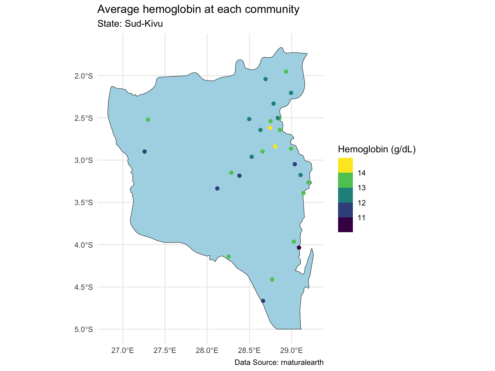
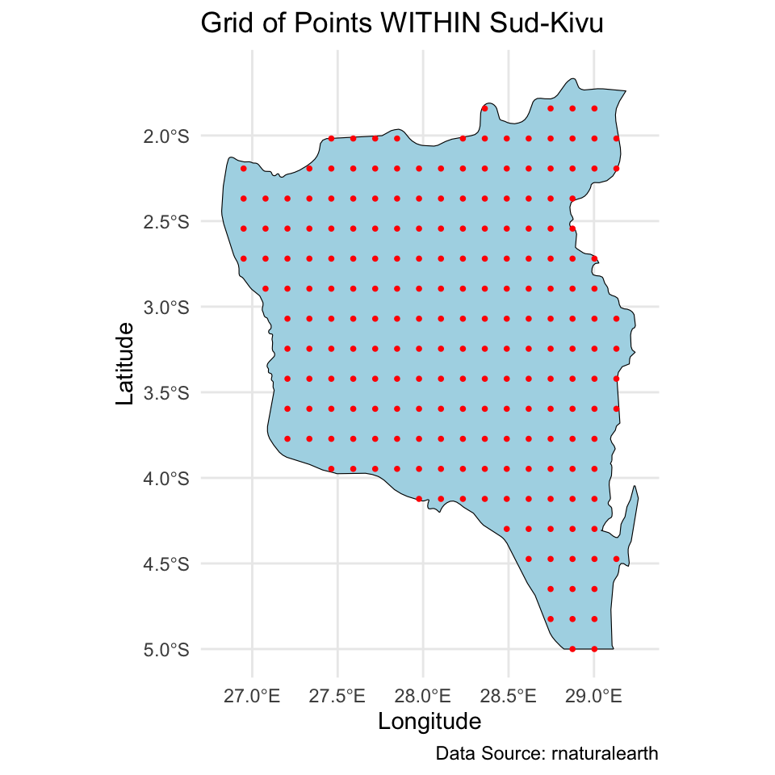
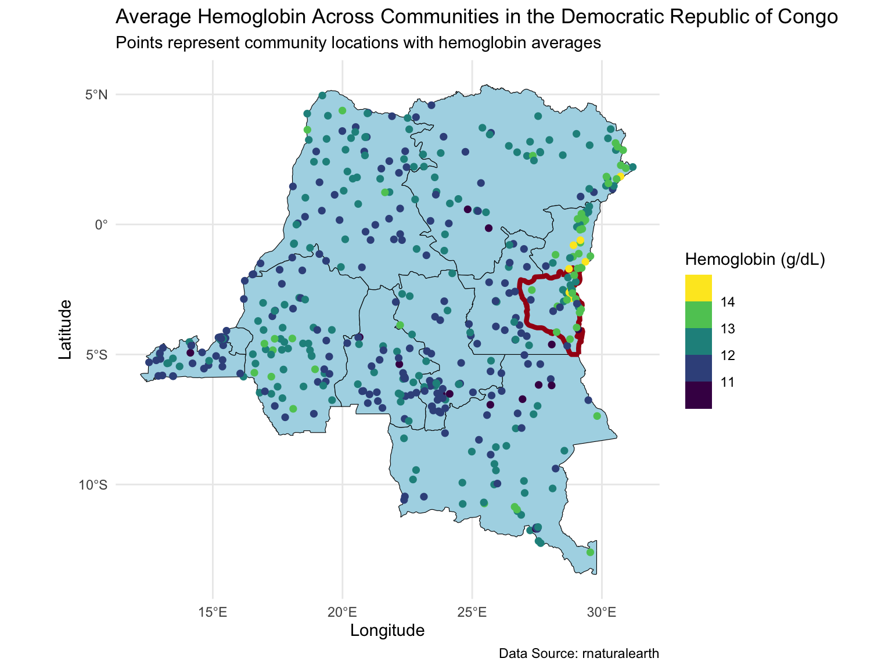
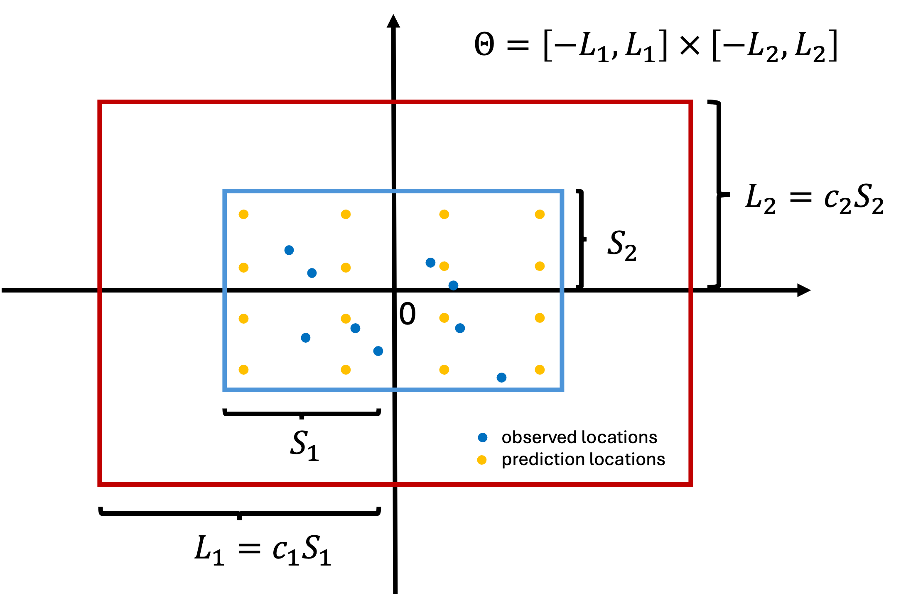

loc_id hemoglobin anemia age urban LATNUM LONGNUM
1 1 12.5 not anemic 28 rural 0.220128 21.79508
2 1 12.6 not anemic 42 rural 0.220128 21.79508
3 1 13.3 not anemic 15 rural 0.220128 21.79508
4 1 12.9 not anemic 28 rural 0.220128 21.79508
5 1 10.4 mild 32 rural 0.220128 21.79508
6 1 12.2 not anemic 42 rural 0.220128 21.79508Scalable Gaussian Processes #1
Christine Shen
Apr 01, 2025
Review of previous lectures
Two weeks ago, we learned about:
Gaussian processes, and
How to use Gaussian processes for
- longitudinal data
- geospatial data
Motivating dataset
Recall we worked with a dataset on women aged 15-49 sampled from the 2013-14 Democratic Republic of Congo (DRC) Demographic and Health Survey. Variables are:
loc_id: location id (i.e. survey cluster).hemoglobin: hemoglobin level (g/dL).anemia: anemia classifications.age: age in years.urban: urban vs. rural.LATNUM: latitude.LONGNUM: longitude.
Motivating dataset
Modeling goals:
Learn the associations between age and urbanicity and hemoglobin, accounting for unmeasured spatial confounders.
Create a predicted map of hemoglobin across the spatial surface controlling for age and urbanicity, with uncertainty quantification.
Map of the Sud-Kivu state
Last time, we focused on one state with ~500 observations at ~30 locations.
Prediction for the Sud-Kivu state
And we created a \(20 \times 20\) grid for prediction of the spatial intercept surface over the Sud-Kivu state.


Map of the DRC
Today we will extend the analysis to the full dataset with ~8,600 observations at ~500 locations.
Prediction for the DRC
And we will make predictions on a \(30 \times 30\) grid over the DRC.


Modeling
\[\begin{align*} Y_j(\mathbf{u}_i) &= \alpha + \mathbf{x}_j(\mathbf{u}_i) \boldsymbol{\beta} + \theta(\mathbf{u}_i) + \epsilon_j(\mathbf{u}_i), \quad \epsilon_j(\mathbf{u}_i) \stackrel{iid}{\sim} N(0,\sigma^2) \end{align*}\]
Data objects:
\(i \in \{1,\dots,n\}\) indexes unique locations.
\(j \in \{1,\dots,n_i\}\) indexes individuals at each location.
\(Y_j(\mathbf{u}_i)\) denotes the hemoglobin level of individual \(j\) at location \(\mathbf{u}_i\).
\(\mathbf{x}_j(\mathbf{u}_i) = (\text{age}_{ij}/10,\text{urban}_i) \in \mathbb{R}^{1 \times p}\), where \(p=2\) is the number of predictors (excluding intercept).
Modeling
\[\begin{align*} Y_j(\mathbf{u}_i) &= \alpha + \mathbf{x}_j(\mathbf{u}_i) \boldsymbol{\beta} + \theta(\mathbf{u}_i) + \epsilon_j(\mathbf{u}_i), \quad \epsilon_j(\mathbf{u}_i) \stackrel{iid}{\sim} N(0,\sigma^2) \end{align*}\]
Population parameters:
\(\alpha \in \mathbb{R}\) is the intercept.
\(\boldsymbol{\beta} \in \mathbb{R}^p\) is the regression coefficients.
\(\sigma^2 \in \mathbb{R}^+\) is the overall residual error (nugget).
Location-specific parameters:
\(\mathbf{u}_i = (\text{longitude}_i,\text{latitude}_i) \in \mathbb{R}^2\) denotes coordinates of location \(i\).
\(\theta(\mathbf{u}_i)\) denotes the spatial intercept at location \(\mathbf{u}_i\).
Location-specific notation
\[\mathbf{Y}(\mathbf{u}_i) = \alpha \mathbf{1}_{n_i} + \mathbf{X}(\mathbf{u}_i) \boldsymbol{\beta} + \theta(\mathbf{u}_i)\mathbf{1}_{n_i} + \boldsymbol{\epsilon}(\mathbf{u}_i), \quad \boldsymbol{\epsilon}(\mathbf{u}_i) \sim N_{n_i}(\mathbf{0},\sigma^2\mathbf{I})\]
\(\mathbf{Y}(\mathbf{u}_i) = (Y_1(\mathbf{u}_i),\ldots,Y_{n_i}(\mathbf{u}_i))^\top\).
\(\mathbf{X}(\mathbf{u}_i)\) is an \(n_i \times p\) dimensional matrix with rows \(\mathbf{x}_j(\mathbf{u}_i)\).
\(\boldsymbol{\epsilon}(\mathbf{u}_i) = (\epsilon_i(\mathbf{u}_i),\ldots,\epsilon_{n_i}(\mathbf{u}_i))^\top\).
Full data notation
\[\mathbf{Y} = \alpha \mathbf{1}_{N} + \mathbf{X} \boldsymbol{\beta} + \mathbf{Z}\boldsymbol{\theta} + \boldsymbol{\epsilon}, \quad \boldsymbol{\epsilon} \sim N_N(\mathbf{0},\sigma^2\mathbf{I})\]
\(\mathbf{Y} = (\mathbf{Y}(\mathbf{u}_1)^\top,\ldots,\mathbf{Y}(\mathbf{u}_{n})^\top)^\top \in \mathbb{R}^N\), with \(N = \sum_{i=1}^n n_i\).
\(\mathbf{X} \in \mathbb{R}^{N \times p}\) stacks \(\mathbf{X}(\mathbf{u}_i)\).
\(\boldsymbol{\theta} = (\theta(\mathbf{u}_1),\ldots,\theta(\mathbf{u}_n))^\top \in \mathbb{R}^n\).
\(\mathbf{Z}\) is an \(N \times n\) dimensional block diagonal binary matrix. Each row contains a single 1 in column \(i\) that corresponds to the location of \(Y_j(\mathbf{u}_i)\). \[ \begin{align} \mathbf{Z} = \begin{bmatrix} \mathbf{1}_{n_1} & \mathbf{0} & \dots & \mathbf{0} \\ \mathbf{0} & \mathbf{1}_{n_2} & \dots & \mathbf{0} \\ \vdots & \vdots & \ddots & \vdots \\ \mathbf{0} & \dots & \mathbf{0} & \mathbf{1}_{n_n} \end{bmatrix}. \end{align} \]
Modeling
We specify the following model: \[\mathbf{Y} = \alpha \mathbf{1}_{N} + \mathbf{X} \boldsymbol{\beta} + \mathbf{Z}\boldsymbol{\theta} + \boldsymbol{\epsilon}, \quad \boldsymbol{\epsilon} \sim N_N(\mathbf{0},\sigma^2\mathbf{I})\] with priors
- \(\boldsymbol{\theta}(\mathbf{u}) | \tau,\rho \sim GP(\mathbf{0},C(\cdot,\cdot))\), where \(C\) is the Matérn 3/2 covariance function with magnitude \(\tau\) and length scale \(\rho\).
- \(\alpha^* \sim N(0,4^2)\). This is the intercept after centering \(\mathbf{X}\).
- \(\beta_j | \sigma_{\beta} \sim N(0,\sigma_{\beta}^2)\), \(j \in \{1,\dots,p\}\)
- \(\sigma \sim \text{Half-Normal}(0, 2^2)\)
- \(\tau \sim \text{Half-Normal}(0, 4^2)\)
- \(\rho \sim \text{Inv-Gamma}(5, 5)\)
- \(\sigma_{\beta} \sim \text{Half-Normal}(0, 2^2)\)
Computational issues with GP
Effectively, the prior for \(\boldsymbol{\theta}\) is \[\boldsymbol{\theta} | \tau,\rho \sim N_n(\mathbf{0},\mathbf{C}), \quad \mathbf{C} \in \mathbb{R}^{n \times n}.\] Matérn 3/2 is an isotropic covariance function, \(C(\mathbf{u}_i, \mathbf{u}_j) = C(\|\mathbf{u}_i-\mathbf{u}_j\|)\).
\[\mathbf{C} = \begin{bmatrix} C(\mathbf{0}) & C(\|\mathbf{u}_1 - \mathbf{u}_2\|) & \cdots & C(\|\mathbf{u}_1 - \mathbf{u}_n\|)\\ C(\|\mathbf{u}_1 - \mathbf{u}_2\|) & C(\mathbf{0}) & \cdots & C(\|\mathbf{u}_2 - \mathbf{u}_n\|)\\ \vdots & \vdots & \ddots & \vdots\\ C(\|\mathbf{u}_{1} - \mathbf{u}_n\|) & C(\|\mathbf{u}_2 - \mathbf{u}_n\|) & \cdots & C(\mathbf{0})\\ \end{bmatrix}.\]
This is not scalable because we need to invert an \(n \times n\) dense covariance matrix for each MCMC iteration, which requires \(\mathcal{O}(n^3)\) floating point operations (flops), and \(\mathcal{O}(n^2)\) memory.
Scalable GP methods overview
The computational issues motivated exploration in scalable GP methods. Existing scalable methods broadly fall under two categories.
Sparsity methods
Low-rank methods
Hilbert space method for GP
Lecture plan
Today:
- How does HSGP work
- Why HSGP is scalable
- How to use HSGP for Bayesian geospatial model fitting and posterior predictive sampling
Thursday:
- Parameter tuning for HSGP
- How to implement HSGP in
stan
HSGP approximation
Given:
- an isotropic covariance function \(C\) which admits a power spectral density, e.g., the Matérn family, and
- a compact domain \(\boldsymbol{\Theta} \in \mathbb{R}^d\) with smooth boundaries. For our purposes, we only consider boxes, e.g., \([-1,1] \times [-1,1]\).
HSGP approximates the \((i,j)\) element of the corresponding \(n \times n\) covariance matrix \(\mathbf{C}\) as \[\mathbf{C}_{ij}=C(\|\mathbf{u}_i - \mathbf{u}_j\|) \approx \sum_{k=1}^m s_k\phi_k(\mathbf{u}_i)\phi_k(\mathbf{u}_j).\]
HSGP approximation
\[\mathbf{C}_{ij}=C(\|\mathbf{u}_i - \mathbf{u}_j\|) \approx \sum_{k=1}^m s_k\phi_k(\mathbf{u}_i)\phi_k(\mathbf{u}_j).\]
- \(s_k \in \mathbb{R}^+\) are positive scalars which depends on the covariance function \(C\) and its parameters \(\tau\) and \(\rho\).
- \(\phi_k: \boldsymbol{\Theta} \to \mathbb{R}\) are basis functions which only depends on \(\boldsymbol{\Theta}\).
- \(m\) is the number of basis functions. Note: even with an infinite sum (i.e., \(m \to \infty\)), this remains an approximation (see Solin and Särkkä (2020)).
HSGP approximation
In matrix notation,
\[\mathbf{C} \approx \boldsymbol{\Phi} \mathbf{S} \boldsymbol{\Phi}^\top.\]
- \(\boldsymbol{\Phi} \in \mathbb{R}^{n \times m}\) is a feature matrix. Only depends on \(\boldsymbol{\Theta}\) and the observed locations.
- \(\mathbf{S} \in \mathbb{R}^{m \times m}\) is diagonal. Depends on the covariance function \(C\) and parameters \(\tau\) and \(\rho\).
\[ \begin{align} \boldsymbol{\Phi} = \begin{bmatrix} \phi_1(\mathbf{u}_1) & \dots & \phi_m(\mathbf{u}_1) \\ \vdots & \ddots & \vdots \\ \phi_1(\mathbf{u}_n) & \dots & \phi_m(\mathbf{u}_n) \end{bmatrix}, \quad \mathbf{S} = \begin{bmatrix} s_1 & & \\ & \ddots & \\ & & s_m \end{bmatrix}. \end{align} \]
Why HSGP is scalable
\[\mathbf{C} \approx \boldsymbol{\Phi} \mathbf{S} \boldsymbol{\Phi}^\top.\]
- \(\boldsymbol{\Phi}\) only depends on \(\boldsymbol{\Theta}\) and the observed locations, can be pre-calculated.
- No matrix inversion.
- Each MCMC iteration requires \(\mathcal{O}(nm + m)\) flops, vs \(\mathcal{O}(n^3)\) for a full GP.
- Ideally \(m \ll n\), but HSGP can be faster even for \(m>n\).
Model reparameterization
Under HSGP, approximately \[\boldsymbol{\theta} \overset{d}{=} \boldsymbol{\Phi} \mathbf{S}^{1/2}\mathbf{b}, \quad \mathbf{b} \sim N_m(0,\mathbf{I}).\]
Therefore we can reparameterize the model as
\[ \begin{align} \mathbf{Y} &= \alpha \mathbf{1}_{N} + X\boldsymbol{\beta} + \mathbf{Z}\boldsymbol{\theta} + \boldsymbol{\epsilon} \\ &\approx \alpha \mathbf{1}_{N} + X\boldsymbol{\beta} + \underbrace{\mathbf{Z}\boldsymbol{\Phi} \mathbf{S}^{1/2}}_{\mathbf{W}}\mathbf{b} + \boldsymbol{\epsilon} \end{align} \]
Note the resemblance to linear regression:
- \(\mathbf{W} \in \mathbb{R}^{n \times m}\) is a known design matrix given parameters \(\tau\) and \(\rho\).
- \(\mathbf{b}\) is an unknown parameter vector with prior \(N_m(0,\mathbf{I})\).
HSGP in stan
Similarly, we can use the reparameterized model in stan.
This is called the non-centered parameterization in stan documentation. It’s recommended for computational efficiency for hierarchical models.
transformed data {
matrix[n,m] PHI;
matrix[N,m] Z;
matrix[N,p] X_centered;
}
parameters {
real alpha_star;
real<lower=0> sigma;
vector[p] beta;
vector[m] b;
vector<lower=0>[m] sqrt_S;
...
}
model {
vector[n] theta = PHI * (sqrt_S .* b);
target += normal_lupdf(y | alpha + X * beta + Z * theta, sigma);
target += normal_lupdf(b | 0, 1);
...
}Posterior predictive distribution
We want to make predictions for \(\mathbf{Y}^* = (Y(\mathbf{u}_{n+1}),\ldots, Y(\mathbf{u}_{n+q}))^\top\), observations at \(q\) new locations. Define \(\boldsymbol{\theta}^* = (\theta(\mathbf{u}_{n+1}),\ldots,\theta(\mathbf{u}_{n+q}))^\top\), \(\boldsymbol{\Omega} = (\alpha,\boldsymbol{\beta},\sigma,\tau,\rho)\). Recall:
\[\begin{align*} f(\mathbf{Y}^* | \mathbf{Y}) &= \int f(\mathbf{Y}^*, \boldsymbol{\theta}^*, \boldsymbol{\theta}, \boldsymbol{\Omega} | \mathbf{Y}) d\boldsymbol{\theta}^* d\boldsymbol{\theta} d\boldsymbol{\Omega}\\ &= \int \underbrace{f(\mathbf{Y}^* | \boldsymbol{\theta}^*, \boldsymbol{\Omega})}_{(1)} \underbrace{f(\boldsymbol{\theta}^* | \boldsymbol{\theta}, \boldsymbol{\Omega})}_{(2)} \underbrace{f(\boldsymbol{\theta},\boldsymbol{\Omega} | \mathbf{Y})}_{(3)} d\boldsymbol{\theta}^* d\boldsymbol{\theta} d\boldsymbol{\Omega}\\ \end{align*}\]
Likelihood: \(f(\mathbf{Y}^* | \boldsymbol{\theta}^*, \boldsymbol{\Omega})\) – remains the same as for GP
Kriging: \(f(\boldsymbol{\theta}^* | \boldsymbol{\theta}, \boldsymbol{\Omega})\) – we will focus on this next
Posterior distribution: \(f(\boldsymbol{\theta},\boldsymbol{\Omega} | \mathbf{Y})\) – we have just discussed
Kriging
Recall under the GP prior,
\[\begin{bmatrix} \boldsymbol{\theta}\\ \boldsymbol{\theta}^* \end{bmatrix} \Bigg| \boldsymbol{\Omega} \sim N_{n+q}\left(\begin{bmatrix} \mathbf{0}_n \\ \mathbf{0}_q \end{bmatrix}, \begin{bmatrix} \mathbf{C} & \mathbf{C}_{+}\\ \mathbf{C}_{+}^\top & \mathbf{C}^* \end{bmatrix}\right),\]
where \(\mathbf{C}\) is the covariance of \(\boldsymbol{\theta}\), \(\mathbf{C}^*\) is the covariance of \(\boldsymbol{\theta}^*\), and \(\mathbf{C}_{+}\) is the cross covariance matrix between \(\boldsymbol{\theta}\) and \(\boldsymbol{\theta}^*\).
Therefore by properties of multivariate normal, \[\boldsymbol{\theta}^* \mid (\boldsymbol{\theta}, \boldsymbol{\Omega}) \sim N_q(\mathbb{E}_{\boldsymbol{\theta}^*},\mathbb{V}_{\boldsymbol{\theta}^*}), \quad \text{where}\] \[ \begin{align} \mathbb{E}_{\boldsymbol{\theta}^*} &= \mathbf{C}_+^\top \mathbf{C}^{-1} \boldsymbol{\theta}\\ \mathbb{V}_{\boldsymbol{\theta}^*} &= \mathbf{C}^* - \mathbf{C}_+^\top \mathbf{C}^{-1} \mathbf{C}_+. \end{align} \]
Kriging under HSGP
Under HSGP, \(\mathbf{C}^* \approx \boldsymbol{\Phi}^* \mathbf{S}\boldsymbol{\Phi}^{*\top}\), \(\mathbf{C}_+ \approx \boldsymbol{\Phi} \mathbf{S}\boldsymbol{\Phi}^{*\top}\), where \[ \begin{align} \boldsymbol{\Phi}^* \in \mathbb{R}^{q \times m} = \begin{bmatrix} \phi_1(\mathbf{u}_{n+1}) & \dots & \phi_m(\mathbf{u}_{n+1}) \\ \vdots & \ddots & \vdots \\ \phi_1(\mathbf{u}_{n+q}) & \dots & \phi_m(\mathbf{u}_{n+q}) \end{bmatrix} \end{align} \] is the feature matrix for the new locations. Therefore approximately \[ \begin{align} \begin{bmatrix} \boldsymbol{\theta} \\ \boldsymbol{\theta}^* \end{bmatrix} \Bigg| \boldsymbol{\Omega} \sim N_{n +q} \left(\begin{bmatrix} \mathbf{0}_n \\ \mathbf{0}_q \end{bmatrix}, \begin{bmatrix} \boldsymbol{\Phi}\mathbf{S}\boldsymbol{\Phi}^\top & \boldsymbol{\Phi}\mathbf{S} \boldsymbol{\Phi}^{*\top} \\ \boldsymbol{\Phi}^*\mathbf{S}\boldsymbol{\Phi}^\top & \boldsymbol{\Phi}^*\mathbf{S}\boldsymbol{\Phi}^{*\top} \end{bmatrix} \right). \end{align} \]
Kriging under HSGP
Again by properties of multivariate normal, \[\boldsymbol{\theta}^* \mid (\boldsymbol{\theta}, \boldsymbol{\Omega}) \overset{?}{\sim} N_q(\mathbb{E}_{\boldsymbol{\theta}^*}^{HS},\mathbb{V}_{\boldsymbol{\theta}^*}^{HS}),\]
\[ \begin{align} \mathbb{E}_{\boldsymbol{\theta}^*}^{HS} &= (\boldsymbol{\Phi}^*\mathbf{S}\boldsymbol{\Phi}^\top) (\boldsymbol{\Phi}\mathbf{S}\boldsymbol{\Phi}^\top)^{-1} \boldsymbol{\theta}\\ \mathbb{V}_{\boldsymbol{\theta}^*}^{HS} &= (\boldsymbol{\Phi}^*\mathbf{S}\boldsymbol{\Phi}^{*\top}) - (\boldsymbol{\Phi}^*\mathbf{S}\boldsymbol{\Phi}^\top) (\boldsymbol{\Phi}\mathbf{S}\boldsymbol{\Phi}^\top)^{-1}(\boldsymbol{\Phi}\mathbf{S} \boldsymbol{\Phi}^{*\top}). \end{align} \]
- If \(m \ge n\), \((\boldsymbol{\Phi}\mathbf{S}\boldsymbol{\Phi}^\top)\) is invertible, this is the kriging distribution under HSGP.
- But what if \(m < n\)?
Kriging under HSGP
If \(m \le n\), claim \(\boldsymbol{\theta}^* \mid (\boldsymbol{\theta}, \boldsymbol{\Omega}) = (\boldsymbol{\Phi}^*\mathbf{S}\boldsymbol{\Phi}^\top) (\boldsymbol{\Phi}\mathbf{S}\boldsymbol{\Phi}^\top)^{\dagger} \boldsymbol{\theta},\) where \(\mathbf{A}^\dagger\) denotes a generalized inverse of matrix \(\mathbf{A}\) such that \(\mathbf{A}^{\dagger \top} = \mathbf{A}^\dagger\), \(\mathbf{A}^\dagger\mathbf{A}=\mathbf{I}\)1. Sketch proof below, see details in class.
By properties of multivariate normal, \(\boldsymbol{\theta}^* \mid (\boldsymbol{\theta}, \boldsymbol{\Omega}) \sim N_q(\mathbb{E}_{\boldsymbol{\theta}^*}^{HS},\mathbb{V}_{\boldsymbol{\theta}^*}^{HS})\), \[ \begin{align} \mathbb{E}_{\boldsymbol{\theta}^*}^{HS} &= (\boldsymbol{\Phi}^*\mathbf{S}\boldsymbol{\Phi}^\top) (\boldsymbol{\Phi}\mathbf{S}\boldsymbol{\Phi}^\top)^{\dagger} \boldsymbol{\theta}\\ \mathbb{V}_{\boldsymbol{\theta}^*}^{HS} &= (\boldsymbol{\Phi}^*\mathbf{S}\boldsymbol{\Phi}^{*\top}) - (\boldsymbol{\Phi}^*\mathbf{S}\boldsymbol{\Phi}^\top) (\boldsymbol{\Phi}\mathbf{S}\boldsymbol{\Phi})^{\dagger}(\boldsymbol{\Phi}\mathbf{S} \boldsymbol{\Phi}^{*\top}). \end{align} \]
Show if \(\boldsymbol{\Phi}\) has full column rank, which is true under HSGP, then \(\mathbb{V}_{\boldsymbol{\theta}^*}^{HS} \equiv \mathbf{0}\) because for any vector \(\mathbf{v} \in \mathbb{R}^m\), \[\mathbf{S} \boldsymbol{\Phi}^\top(\boldsymbol{\Phi}\mathbf{S}\boldsymbol{\Phi}^\top)^{\dagger}\boldsymbol{\Phi}\mathbf{v} = \mathbf{v} \tag{1}.\]
Kriging under HSGP
Under the reparameterized model, \(\boldsymbol{\theta} = \boldsymbol{\Phi} \mathbf{S}^{1/2}\mathbf{b}\), for \(\mathbf{b} \sim N_m(0,\mathbf{I}).\) Therefore \[ \begin{align} \boldsymbol{\theta}^* \mid (\boldsymbol{\theta},\boldsymbol{\Omega}) &= (\boldsymbol{\Phi}^*\mathbf{S}\boldsymbol{\Phi}^\top) (\boldsymbol{\Phi}\mathbf{S}\boldsymbol{\Phi}^\top)^{\dagger} \boldsymbol{\theta} \\ &= (\boldsymbol{\Phi}^*\mathbf{S}\boldsymbol{\Phi}^\top) (\boldsymbol{\Phi}\mathbf{S}\boldsymbol{\Phi}^\top)^{\dagger}(\boldsymbol{\Phi} \mathbf{S}^{1/2}\mathbf{b}) \\ &= \boldsymbol{\Phi}^*\mathbf{S}^{1/2}\mathbf{b}. \quad (\text{by equation (1) in the last slide}) \end{align} \]
During MCMC sampling, we can obtain posterior predictive samples for \(\boldsymbol{\theta}^*\) through posterior samples of \(\mathbf{b}\) and \(\mathbf{S}\). Let superscript \((s)\) denote the \(s\)th posterior sample:
\[\boldsymbol{\theta}^{*(s)} = \boldsymbol{\Phi}^* \mathbf{S}^{(s) 1/2} \mathbf{b}^{(s)}.\]
Kriging under HSGP – alternative view
Under the reparameterized model, there is another (perhaps more intuitive) way to recognize the kriging distribution under HSGP when \(m \le n\).
We model \(\boldsymbol{\theta} = \boldsymbol{\Phi} \mathbf{S}^{1/2}\mathbf{b}\), where \(\mathbf{b}\) is treated as the unknown parameter. Therefore for kriging: \[ \begin{align} \boldsymbol{\theta}^* \mid (\boldsymbol{\theta},\boldsymbol{\Omega}) &= \boldsymbol{\Phi}^*\mathbf{S}^{1/2}\mathbf{b} \mid (\mathbf{b},\mathbf{S},\boldsymbol{\Omega}) \\ &=\boldsymbol{\Phi}^*\mathbf{S}^{1/2}\mathbf{b}. \end{align} \]
HSGP kriging in stan
If \(m \le n\), Kriging under HSGP can be easily implemented in stan.
If \(m>n\), we need to invert an \(n \times n\) matrix \((\boldsymbol{\Phi}\mathbf{S}\boldsymbol{\Phi}^\top)\) for kriging, which could be computationally prohibitive.
Recap
HSGP is a low rank approximation method for GP.
\[ \begin{align} \mathbf{C}_{ij} \approx \sum_{k=1}^m s_k\phi_k(\mathbf{u}_i)\phi_k(\mathbf{u}_j), \quad \mathbf{C} \approx \boldsymbol{\Phi} \mathbf{S} \boldsymbol{\Phi}^\top, \end{align} \]
- for covariance function \(C\) which admits a power spectral density.
- on a box \(\boldsymbol{\Theta} \subset \mathbb{R}^d\).
- with \(m\) number of basis functions.
We have talked about:
- why HSGP is scalable.
- how to do posterior sampling and posterior predictive sampling in
stan.
HSGP parameters
Solin and Särkkä (2020) showed that HSGP approximation can be made arbitrarily accurate as \(\boldsymbol{\Theta}\) and \(m\) increase.
But how to choose:
- size of the box \(\boldsymbol{\Theta}\).
- number of basis functions \(m\).
Our goal:
Minimize the run time while maintaining reasonable approximation accuracy.
Note: we treat estimation of the GP magnitude parameter \(\tau\) as a separate problem, and only consider approximation accuracy of HSGP in terms of the correlation function.
HSGP approximation box
Due to the design of HSGP, the approximation is less accurate near the boundaries of \(\boldsymbol{\Theta}\).
- Suppose all the coordinates are centered. Let \[S_l = \max_i |\mathbf{u}_{il}|, \quad l=1,\dots,d, \quad i= 1, \dots, (n+q)\] such that \(\boldsymbol{\Theta}_S = \prod_{l=1}^d [-S_l,S_l]\) is the smallest box which contains all observed and prediction locations. We should at least ensure \(\boldsymbol{\Theta} \supset \boldsymbol{\Theta}_S\).
- We want the box to be large enough to ensure good boundary accuracy. Let \(c_l \ge 1\) be boundary factors, we consider \[\boldsymbol{\Theta} = \prod_{l=1}^d [-L_l,L_l], \quad L_l = c_l S_l.\]
HSGP approximation box and \(\rho\)

How much the approximation accuracy deteriorates towards the boundaries depends on smoothness of the true surface.
- the larger the length scale \(\rho\), the smoother the surface, a smaller box (smaller \(c\)) can be used for the same level of boundary accuracy.
HSGP approximation box and \(m\)
The larger the box,
- the more basis functions we need for the same level of overall accuracy,
- hence higher run time.
Zooming out doesn’t simplify the problem

- If we scale the coordinates by a constant \(b\), the length scale \(\rho\) of the underlying GP also needs to be approximately scaled by \(b\) to capture the same level of details in the data.
- We can effectively think of the length scale parameter as \((\rho/\|\mathbf{S}\|)\).
HSGP basis functions
The total number of basis functions \(m = \prod_{l=1}^d m_l\), i.e., we need to decide on \(m_l\)’s, the number of basis functions for each dimension.
- \(m\) scales exponentially in \(d\), hence the HSGP computation complexity \(\mathcal{O}(nm+m)\) also scales exponentially in \(d\). Therefore HSGP is only recommended for \(d \le 3\), at most \(4\).
- The higher the \(m\), the better the overall approximation accuracy, the higher the runtime.
Relationship between \(c\), \(m\) and \(\rho\)
Let’s quickly recap. For simplicity, let \(d=1\),
- As \((\rho/S)\) decreases, the surface is less smooth,
- \(c\) needs to increase to retain boundary accuracy.
- \(m\) needs to increase to retain overall accuracy.
- As \(c\) increases, \(m\) needs to increase to retain overall accuracy.
- As \(m\) increases, run time increases.
Hence we want to minimize \(m\) and \(c\) while maintaining approximation accuracy.
Empirical functional form
- Given \(c\) and \(\rho/S\), let \(m_C(c,\rho/S)\) denote the minimum number of basis functions needed for a near 100% accuracy under covariance function \(C\).
- Riutort-Mayol et al. (2023) used extensive simulations to obtain an empirical function form of \(m_C(c,\rho/S)\) for frequently used Matérn covariance functions. E.g., for Matérn 3/2,
\[m_{3/2}(c,\rho/S)=3.24 \frac{c}{\rho/S}, \quad c \ge 4.5 \frac{\rho}S, \quad c \ge 1.2.\]
Notice:
- linear proportionality between \(m\), \(c\) and \(\rho/S\).
- for a given \(\rho/S\), there exists a minimum \(c\), below which the approximation is poor no matter how large \(m\) is.
Question
BUT, in real applications, we do not know \(\rho\).
So how to use \(m_C(c,\rho/S)\) to help choose \(c\) and \(m\)?
Prepare for next class
Work on HW 05 which is due Apr 8
Complete reading to prepare for Thursday’s lecture
Thursday’s lecture:
- Parameter tuning for HSGP
- How to implement HSGP in
stan
References
Datta, Abhirup, Sudipto Banerjee, Andrew O Finley, and Alan E Gelfand. 2016. “Hierarchical Nearest-Neighbor Gaussian Process Models for Large Geostatistical Datasets.” Journal of the American Statistical Association 111 (514): 800–812.
Furrer, Reinhard, Marc G Genton, and Douglas Nychka. 2006. “Covariance Tapering for Interpolation of Large Spatial Datasets.” Journal of Computational and Graphical Statistics 15 (3): 502–23.
Higdon, Dave. 2002. “Space and Space-Time Modeling Using Process Convolutions.” In Quantitative Methods for Current Environmental Issues, 37–56. Springer.
Riutort-Mayol, Gabriel, Paul-Christian Bürkner, Michael R Andersen, Arno Solin, and Aki Vehtari. 2023. “Practical Hilbert Space Approximate Bayesian Gaussian Processes for Probabilistic Programming.” Statistics and Computing 33 (1): 17.
Snelson, Edward, and Zoubin Ghahramani. 2005. “Sparse Gaussian Processes Using Pseudo-Inputs.” Advances in Neural Information Processing Systems 18.
Solin, Arno, and Simo Särkkä. 2020. “Hilbert Space Methods for Reduced-Rank Gaussian Process Regression.” Statistics and Computing 30 (2): 419–46.
Vecchia, Aldo V. 1988. “Estimation and Model Identification for Continuous Spatial Processes.” Journal of the Royal Statistical Society Series B: Statistical Methodology 50 (2): 297–312.